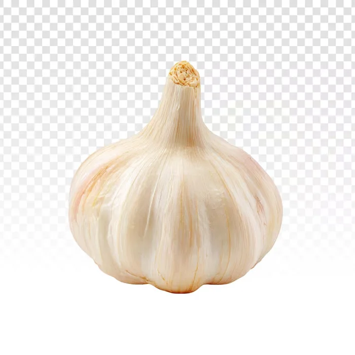

製作 · the making of
Making of
Bento & Basket is a fictional family minimarket in New York's Chinatown. Auntie Mei, Uncle Bao and Mochi the cat don't exist, but every aisle, recipe card and receipt here was designed and coded as if they did.
01The idea
Asian supermarket flyers are loud on purpose: starbursts, prices in giant red numbers, three alphabets on one page, a grandma giving a thumbs up. Nobody designs a website like that, so I tried.
The rule was simple: every page is a different object you'd find in the shop. The home is a poster, the aisles are a newspaper ad and a store map, the recipes are index cards in a tin, the flyer is a flyer, the story is a photo album, and the visit page is the shop front itself.
02Moodboard
references collected before a single line of code. not my images.
03Colour
flat poster colours, no gradients except the sky. tap a swatch to copy it.
04Type
05Six pages, six objects
06Every sticker is a cutout
About 80 product, dish and story photos were cut out with a small Python script: it floods the background from the edges, softens the mask and crops to the object. Round plates on busy tablecloths got an ellipse mask instead. CSS adds the white die-cut outline, so every product looks like a sticker.
Then everything was converted to WebP: 51 MB of PNGs became 6 MB.

beforeafter07Under the hood
- HTML, CSS, vanilla JavaScript. No framework, no build step: open the folder and it runs.
- GSAP + ScrollTrigger for the motion: the pinned album, the falling SALE letters, the receipt that prints line by line.
- Lenis for smooth scrolling.
- One catalog (
js/catalog.js) drives the aisles, the flyer, the basket drawer and the receipt, so a price changes in one place. - New York time drives the opening hours, the door sign, the clock, the countdown and the after-hours lights, wherever you read from.
- Web Audio for the bell, the kitchen timers and the karaoke song, synthesised, no audio files.
- localStorage remembers your basket, clipped coupons and notes on the cork board. Nothing leaves your browser.
08For everyone
- A skip link, visible focus rings and keyboard access to every button, card, timer and drawer.
prefers-reduced-motionturns off smooth scroll and the big animations; the content is all there without them.- Dialogs (recipe cards, basket, karaoke) trap focus, close with Esc and give focus back.
- Decorative Chinese characters are hidden from screen readers; real content is labelled in English.
09Secrets
spoilers. open at your own risk.
Mochi
She is asleep somewhere on every page, in a different spot each visit. Click her.
The lights
When the shop is closed in New York, the whole site goes after hours. The button in the header forces day or night.
The bell
On the Find us page, ring the door. Mei answers differently in the morning, at lunch, at night and on Tuesdays.
Karaoke
Type karaoke anywhere, press the neon sign in the album, or visit on a Thursday night after closing. Bao wrote the song.
The timers
Every step with a time in a recipe card is a real kitchen timer. It dings.
Concept, design
& code by
ghostly.grl ♥
a fictional shop for a portfolio · not for sale · © 2026
photos: stock images and references, used for a non-commercial study · fonts: Google Fonts · motion: GSAP, Lenis